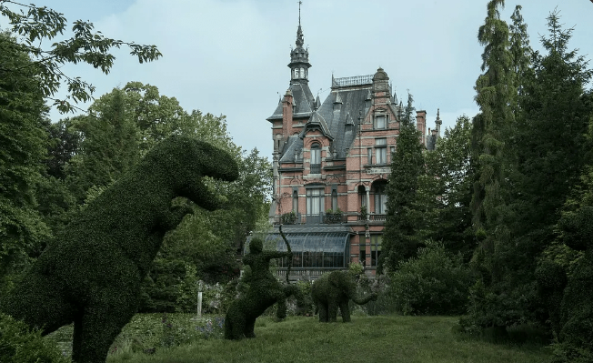
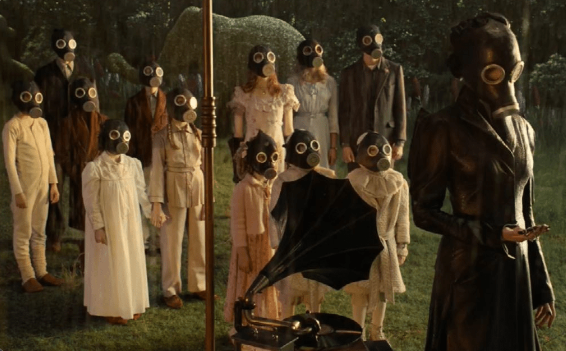

Story Summary
Jack, played by Asa Butterfield, grew up listening to his grandfather's bedside stories about children with special abilities. After his grandfather's mysterious death, which left behind clues about a world belonging to another dimension filled with mysteries, Jack follows these clues and enters this enigmatic world. He discovers that these peculiar children indeed exist, living there to hide from terrifying mutated monsters. With Jack's arrival, danger also approaches, and he must join forces with the children to fight against the dark powers.

After the death of his grandfather, Jacob Portman discovers an old photograph that leads him to the ruins of a mysterious orphanage. The orphanage, on a remote Welsh island, was once home to children with unusual abilities under Miss Peregrine's stewardship.

During his exploration, Jacob accidentally discovers that the orphanage is actually hidden in a time loop where the children of the orphanage still live, each with unique abilities. Miss Peregrine is not only the guardian of the orphanage, but also the key to maintaining the time loop.

Jacob soon discovers that both the children and the orphanage itself are threatened by a mysterious and dangerous force. Jacob must learn how to trust these new friends with special abilities and uncover the secrets of the family's past in order to protect the orphanage and the children in it from danger.